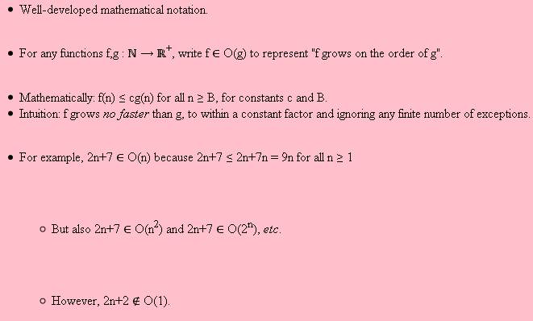
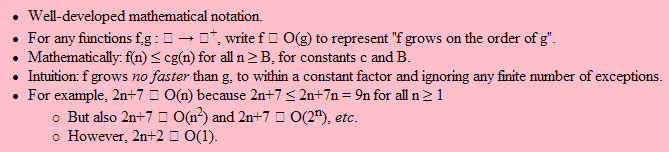

Why I Miss Command-Line Programming
Here is the HTML I’m rendering:
?xml version=”1.0” encoding=”utf-8”?!DOCTYPE html PUBLIC ‘-//W3C//DTD XHTML 1.0 Strict//EN’ ‘http://www.w3.org/TR/xhtml1/DTD/xhtml1-strict.dtd’html xmlns=”http://www.w3.org/1999/xhtml” <head> <title>Software Carpentry: Computational Complexity</title> <meta name=”author” content=”Greg Wilson” /> <meta name=”company” content=”Third Bit” /> <meta name=”date” content=”Sun Jul 12 17:32:26 2009” /> <link rel=”stylesheet” href=”format/style.css” type=”text/css” /> </head> <body> <ul> <li>Well-developed mathematical notation.</li> <li>For any functions f,g : ℕ → ℝ<sup>+</sup>, write f ∈ O(g) to represent "f grows on the order of g".</li> <li>Mathematically: f(n) ≤ cg(n) for all n ≥ B, for constants c and B.</li> <li>Intuition: f grows <em>no faster</em> than g, to within a constant factor and ignoring any finite number of exceptions.</li> <li>For example, 2n+7 ∈ O(n) because 2n+7 ≤ 2n+7n = 9n for all n ≥ 1 <ul> <li>But also 2n+7 ∈ O(n<sup>2</sup>) and 2n+7 ∈ O(2<sup>n</sup>), <em>etc</em>.</li> <li>However, 2n+2 ∉ O(1).</li> </ul> </li> </ul> </body> </html>
Here is the appearance with Firefox 3 on Windows XP:

And here is the appearance with IE7 on the same platform:

<><><>